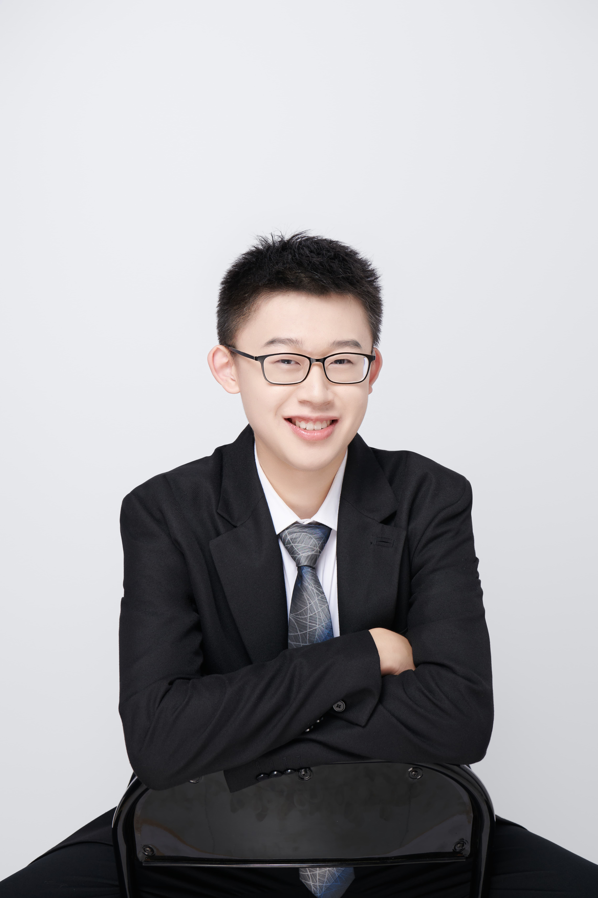

Biochemistry · CRISPR · Stem Cells
Incoming PhD student at the Francis Crick Institute, studying FOXO1 gain-of-function mutations in liver regeneration. Previously at the Doudna Lab (Gladstone Institutes) and Huang Lab (UCSF), engineering CRISPR-based cancer therapeutics and probing cardiac regeneration.

About
I graduated with First Class Honours in Biochemistry from the University of Manchester, where two years of placement research took me from San Francisco to the Bay Area's leading genome engineering labs.
At Gladstone Institutes, I worked in Jennifer Doudna's lab to programme SuCas12a2's collateral cleavage activity into a selective cancer-cell killing system — work that contributed to a co-first-author Nature publication. At UCSF, I used CRISPRi and RNA in situ hybridisation to investigate cardiac regeneration in the Guo Huang Lab.
Starting September 2026, I will join the Francis Crick Institute (UCL) for my PhD, focusing on how FOXO1 gain-of-function mutations drive liver regeneration and cellular reprogramming in hiPSC models.
Research
Programmed SuCas12a2's collateral DNA-cleavage activity to selectively kill cancer cells carrying undruggable TP53 mutations.
Investigated the role of Taco1 in cardiomyocyte proliferation using cardiac-specific CRISPRi knockdown and AAV9 delivery in neonatal mouse hearts.
PhD project investigating how FOXO1 S22W gain-of-function mutations influence liver regeneration and cellular reprogramming using human iPSC-derived models. Supervised by Dr Foad Rouhani.
Publications
Nature · 2026
doi.org/10.1038/s41586-026-10738-7 ↗
Co-first Author